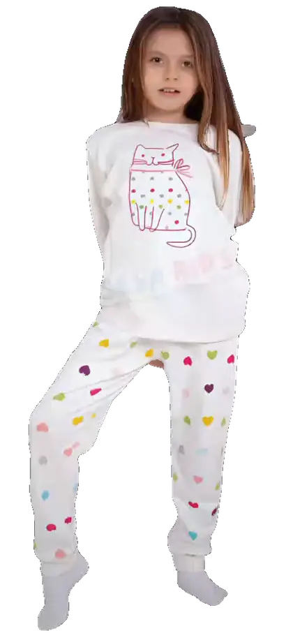
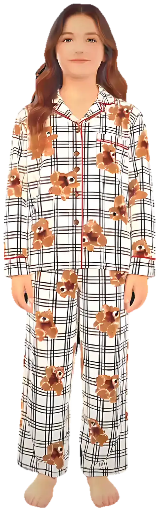
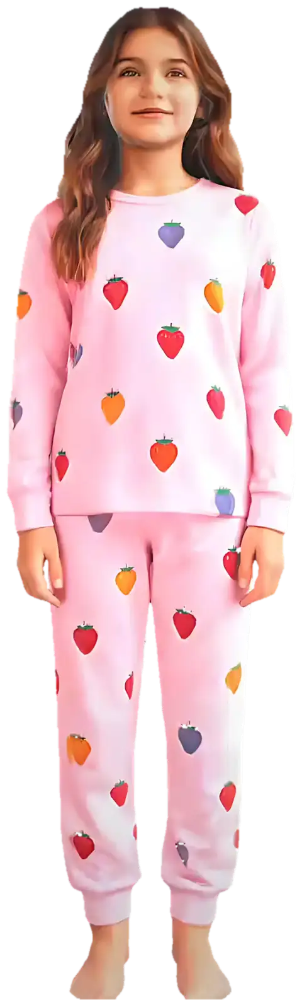
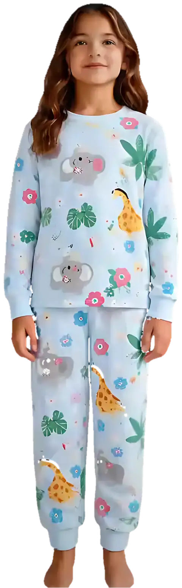
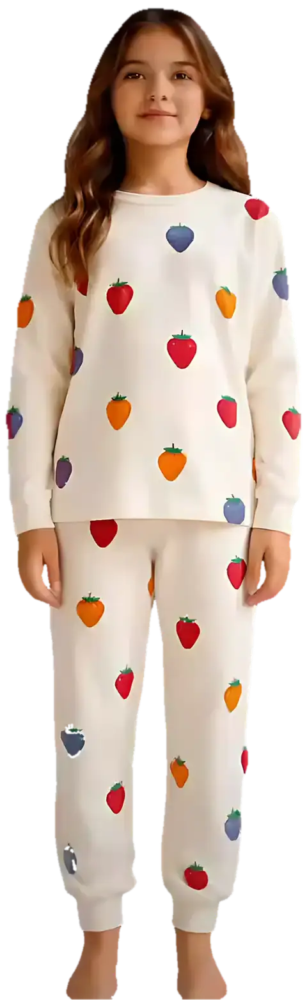

Kız çocuk pijama takımları
Kız çocuklar için pamuklu, yumuşacık ve rengârenk pijama takımları. Kalpli kedi, çilekli, ayıcıklı ekose ve safari desenleri; 2–12 yaş bedenler, manşetli paçalar.

Kalpli Kedi Takımı449 TL · 2–12 yaş
Ayıcıklı Ekose Takım449 TL · 2–12 yaş
Renkli Çilekler Takımı449 TL · 2–12 yaşAyıcıklı Bej Ekose Takım449 TL · 2–12 yaş
Safari Dostları Takımı449 TL · 2–12 yaş
Krem Çilekler Takımı449 TL · 2–12 yaşSık sorulanlar
Çocuk pijama bedeni nasıl seçilir?
Bedenleri yaşa göre 2-3 yaştan 11-12 yaşa kadar sunuyoruz. Boy ölçüsüne göre: 2-3 yaş: 92–98 cm, 3-4 yaş: 98–104 cm, 4-5 yaş: 104–110 cm, 5-6 yaş: 110–116 cm, 6-7 yaş: 116–122 cm, 7-8 yaş: 122–128 cm, 8-9 yaş: 128–134 cm, 9-10 yaş: 134–140 cm, 10-11 yaş: 140–146 cm, 11-12 yaş: 146–152 cm. İki beden arasında kalırsanız büyük olanı seçin; manşetli paçalar boyu toparlar.
SESA KIDS pijamaları hangi kumaştan?
%100 pamuk, yumuşak interlok kumaş; tene dost, terletmeyen ve çok yıkamada formunu koruyan dokuma.
Kargo ne zaman gelir, ücreti ne kadar?
Siparişler 1–3 iş günü içinde kargoya verilir. 750 ₺ ve üzeri siparişlerde kargo ücretsizdir.
İade ve değişim yapabilir miyim?
Ürünü teslim aldıktan sonra 14 gün içinde, etiketi sökülmemiş ve kullanılmamış olarak iade edebilir ya da değiştirebilirsiniz.